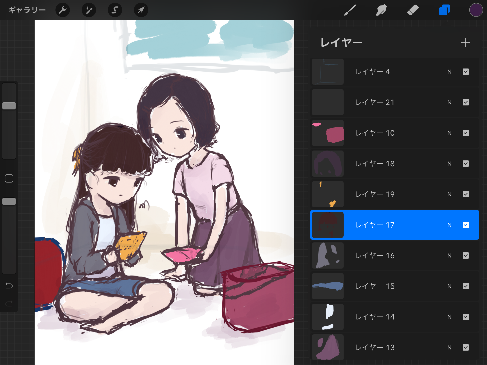

休日はだらだらするのがよい
起きて二度寝して起きたら15時。まあ体調よくなかったので仕方なし。ゲーセンは明日行くことにしました。
全く進捗がなかったわけではなく、またポンデケージョを焼いた後、おえかきを進めていました。あいにく、私は仕上がるまで何を描いているのかは秘密にしたいタイプで、かつ今回はラフを見せた時点で誰なのかすぐわかってしまう子を描いているので、経過報告はできませんが。
おえかきをするときは、元ネタとなる一枚絵が存在する場合と、存在しない場合があります。音ゲー曲を描こうとするときはジャケットがあるので前者になることが多いですが、なにかのキャラを描くという目的で描き始めると後者になることが多い。この二者には、配色をどれだけ自分で考えなければならないかという差があります。前者は線画まで描いた後、元絵を参考にしてどんどん色を置いていって大丈夫なんですが、後者はそれをすると事故ってしぬことが多いので、線画の前のラフを一度大まかに塗って色を決めてしまうという工程を挟みます1。色ラフって言ったり。後者は線画までの過程が長い分、線画に入ってしまうとあとは既に決まったものを描いて塗るだけなので楽。前者はさきに線画にょきにょきできてそれをやってる間は楽しいですね。
ラフを先に塗ると、その配色が上手く行った時におおおこれはいい感じの絵になるぞおおおって言ってモチベが上がるのでとてもよろしい。やっぱりこれ今描いてる色ラフ載せた方が伝わりやすいのでは？うーん……どこ切っても誰かわかるんだよなあ……。そうだ、既に仕上がっている絵について語ればいいのでは？？？（それはそう）
放課後は友達の家に行くのです pic.twitter.com/z9Ds0fZvkl
— ₍₍⁽⁽φ( '༥' )₎₎⁾⁾ (@slpp_bild) August 14, 2021
この絵は色ラフを切りました。具体的にはこんな感じ。

先に乗算の影色や加算のハイライトも色を決めちゃう。仕上がりが安定するので面倒でなければ色ラフはぜひすべき2ですが、唯一欠点があるとすればレイヤーの管理が大変なことでしょうか。プロクリエイトちゃんはレイヤー数に上限があるので毎度ひいひい言っています。
逆に色ラフを切らずに上手く行った例はこれ。
汚れた私の息は、止まる。 pic.twitter.com/Us8DfzhzMh
— ₍₍⁽⁽φ( '༥' )₎₎⁾⁾ (@slpp_bild) May 8, 2021
全部いきあたりばったりで色置いてます。これは元絵がほんと素敵なので……。推し曲なのでぜひ聴いてね。
ちょっと今描いてる絵の話に戻ると、色ラフ切ってる時にもしかして東方キャラってキャラデザシンプル！？って感想に至りました。いや、単純にシンプルって言うと乱暴ですけど、キャラごとの色数がかなり絞られてるんじゃないかな、と思います。2色置いたらベースほぼ塗り終わっててちょっとびっくりした。元のキャラデザはシンプルなのを、描く絵描きさんが自分の技量と絵柄に合わせてどんどんアレンジしていくのが主流なジャンルなんでしょうね。ネタの練りがいがあって楽しいですが資料集めてるときはまじで困る。何が正しいねん（全部正しいというオチ）。
自分がぱっと思いつくものでこの逆のジャンルと言えばArcaeaですね。あれは公式が囲い込んでる絵描きさんが描き込みの暴力で殴ってくるタイプ（褒めてる）なので、どのキャラもキャラデザが絵描き殺しすぎる。メインの絵描きさんじゃなくても読んでくるのがLAMさんとかで二次創作絵描きerは全員もれなく死ぬ。作画コストやばすぎ。上手く簡略化して推しを描き続けてる方や圧倒的画力でぶん殴り返してる方もいらっしゃいますが、基本的にArcaea二次創作は魔境だなあと思って生きています。おまけに筆爆速erもいてやばすぎ。おばあちゃんついていけない。
なお、原作のキャラデザが細かすぎると悪いのかと言われると、そうでもないんですね。めっちゃ拘られてていい感じのお召し物のキャラを見るとそれはそれで描きたくなっちゃうのが絵描きです。この視点でずっと一度描いてみたいなあと思っているジャンルに電音部があります。Mika Pikazoさんの超素敵カラフルキャラデザで見ててうおおおお描きてえええになります。ちょっと12人は物量が厳しいんですけどね。
バンダイナムコエンターテインメントの新プロジェクト『電音部』(@denonbu )のメインキャラクターデザインを手がけさせていただきました！
— Mika Pikazo (@MikaPikaZo) June 28, 2020
今後ともどうぞよろしくお願いします！ #電音部https://t.co/V7mMrMJrRQ pic.twitter.com/i4RCIJ3YvU
バンダイナムコさんの新プロジェクト『電音部』（@denonbu）のハラジュクエリアのキャラクターデザインを描かせていただきました！🐰🐤🐶#電音部 pic.twitter.com/ys7c2zbUWj
— Mika Pikazo (@MikaPikaZo) August 28, 2020
バンダイナムコさんの新プロジェクト『電音部』（@denonbu）のアザブエリアのキャラクターデザインを描かせていただきました！ 黒！金！銀！😼💰🍴#電音部 pic.twitter.com/aMb5j1XHlR
— Mika Pikazo (@MikaPikaZo) September 17, 2020
バンダイナムコさんの『電音部』（@denonbu）にてシブヤエリアの"帝音国際学院"のキャラクターデザインを手がけさせていただきました！⚡️赤・青・黄！ #電音部 pic.twitter.com/EOPasMhtL3
— Mika Pikazo (@MikaPikaZo) November 5, 2020
あとは、グルコス10周年のナビゲーター3人娘の衣装がめちゃくちゃすこなんですよね。白基調に各カラーのアクセントというベースは共通で、各々のイメージに合わせて少しずつスカートとかネックラインとかアレンジされてるのまじで拘りを感じる。ぜひ描きてえええうおおおおって言いながらもう1ヶ月……。すんませんもうちょい待って…………3。
【10周年】グルーヴコースターシリーズ10周年を記念した、ナビゲーター(リンカ、ユメ、セイネ)の新ビジュアルと、書き下ろし曲第1弾はこちら！#グルコス pic.twitter.com/5kSlOdXL2f
— グルーヴコースター公式 (@groove_coaster) July 26, 2021
㊗️グルーヴコースター10周年🎉
— 未早@さなぽん/C99 2日目西-の29b (@sanapon7777) July 28, 2021
おめでとうございます🎊🎊🎊#グルコス pic.twitter.com/oXjwPPVCPf